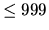

| Dart-a-Mania |
The game of darts has many variations. One such variation is the game of 301. In the game of 301 each player starts with a score of 301 (hence the name). Each player, in turn, throws three darts to score points which are subtracted from the player's current score. For instance, if a player has a current score of 272 and scores 55 points with the three darts, the new score would be 217. Each dart that is tossed may strike regions on the dartboard that are numbered between 1 and 20. (A value of zero indicates that the player either missed the dartboard altogether or elected to not throw the dart.) A dart that strikes one of these regions will either score the number printed on the dartboard, double the number printed, or triple the number printed. For example, a player may score 17, 34, or 51 points with a toss of one dart that hits one of the regions marked with a 17. A third way to score points with one dart is to hit the BULLS EYE which is worth 50 points. (There is no provision for doubling or tripling the bull's eye score.)
The first player to reduce his score to exactly zero wins
the game. If a player scores more points than his/her current
score, the player is said to have ``busted" and the new score is
returned to the last current score.
Given a player's current dart score, write a program to calculate all the possible combinations and permutations of scores on throwing three darts that would reduce the player's score to exactly zero (meaning the player won the game). The output of the program should contain the number of combinations and permutations found.
For example, if the player's current score is 2, then there would be two
combinations and six permutations. The combinations would be: 1) obtain a score
of 2 on any one dart and zero on the other two, and 2) obtain a score of one on
two different darts and zero on the third dart. The order in which this is
accomplished is not important.
With permutations the order is significant; therefore the
six permutations would be as follows:
Note: The program doesn't print out the actual permutations
and combinations, just the total number of each.
The input file contains a list of integers (each ), one per line, that represent several players' current scores. A value of zero or less will signify the end of the input file.
For each positive integer in the input file, 2 or 3 line(s) will be written to the output file.
If the score can be reduced to zero, your program should write the lines:
NUMBER OF COMBINATIONS THAT SCORES x IS
c.
NUMBER OF PERMUTATIONS THAT SCORES x IS p.
where x is the value of the player's score while c
and p are the total number of combinations and permutations
possible, respectively.
If it is impossible to reduce the player's score to zero, write the line:
THE SCORE OF x CANNOT BE MADE WITH THREE
DARTS.
After the line(s) above are printed, your program should write a
line of 70 asterisks to separate output for different scores. The
message ``END OF OUTPUT" should appear at the end of the
output file.
162 175 2 68 211 114 -100
NUMBER OF COMBINATIONS THAT SCORES 162 IS 7. NUMBER OF PERMUTATIONS THAT SCORES 162 IS 28. ********************************************************************** THE SCORE OF 175 CANNOT BE MADE WITH THREE DARTS. ********************************************************************** NUMBER OF COMBINATIONS THAT SCORES 2 IS 2. NUMBER OF PERMUTATIONS THAT SCORES 2 IS 6. ********************************************************************** NUMBER OF COMBINATIONS THAT SCORES 68 IS 187. NUMBER OF PERMUTATIONS THAT SCORES 68 IS 1056. ********************************************************************** THE SCORE OF 211 CANNOT BE MADE WITH THREE DARTS. ********************************************************************** NUMBER OF COMBINATIONS THAT SCORES 114 IS 82. NUMBER OF PERMUTATIONS THAT SCORES 114 IS 445. ********************************************************************** END OF OUTPUT